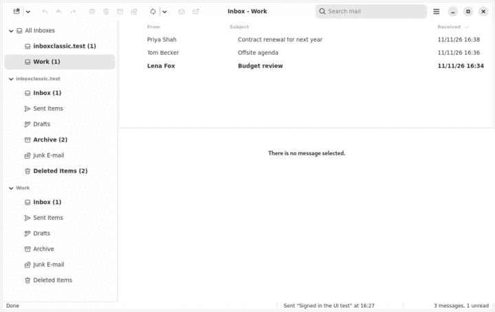

Vsa prejeta pošta
Če imate dva ali več računov, lahko berete pošto vseh map Prejeto na enem seznamu ali odprete mapo Prejeto posameznega računa.
Vsa prejeta pošta je na vrhu seznama map, kadar imate dva ali več računov. Navaja pošto map Prejeto vseh računov, po izbranem vrstnem redu. Stolpec Račun pri vsakem sporočilu navede račun.

- Ukazi za odgovor, posredovanje, premikanje in brisanje veljajo za izbrano sporočilo v njegovem računu. Premaknete ga lahko tudi v drug račun.
- Pri pisanju novega sporočila je sprva izbran račun trenutno izbranega sporočila.
- Označi vse kot prebrano v pogledu Vsa prejeta pošta označi sporočila v vseh mapah Prejeto kot prebrana. To je edini ukaz v meniju desnega klika, saj to ni mapa enega računa.
Mapa Prejeto posameznega računa
Pod pogledom Vsa prejeta pošta ima mapa Prejeto vsakega računa svojo vrstico, poimenovano tako kot račun, s številom neprebranih sporočil. Izberite vrstico, da vidite samo to mapo Prejeto. Mape Prejeto so zbrane tukaj; pod imeni računov nižje na seznamu so preostale mape.
Vrstice sledijo vrstnemu redu vaših računov. Če želite spremeniti vrstni red, povlecite vrstico nad ali pod drugo. Glejte Spreminjanje, razvrščanje in odstranjevanje računov.
Seznam map si zapomni, ali ste pogled Vsa prejeta pošta razširili ali strnili. Izgine, ko ostane samo en račun.
Vsa poslana pošta in Vsi osnutki
Vsa poslana pošta in Vsi osnutki sledita pogledu Vsa prejeta pošta. Prikazujeta sporočila iz map Poslano in Osnutki vseh računov. Stolpec Račun navede račun, ob sporočilu pa so prikazani prejemniki. Razširite enega od njiju s puščico, da dobite vrstico za vsak račun in vidite samo mapo Poslano ali Osnutki enega računa. Računi niže spodaj teh dveh map ne navajajo več.
Osnutek, odprt iz pogleda Vsi osnutki, ohrani račun, v katerem je bil shranjen. Oba združena pogleda sta sprva strnjena; program si zapomni, ali ste ju razširili.